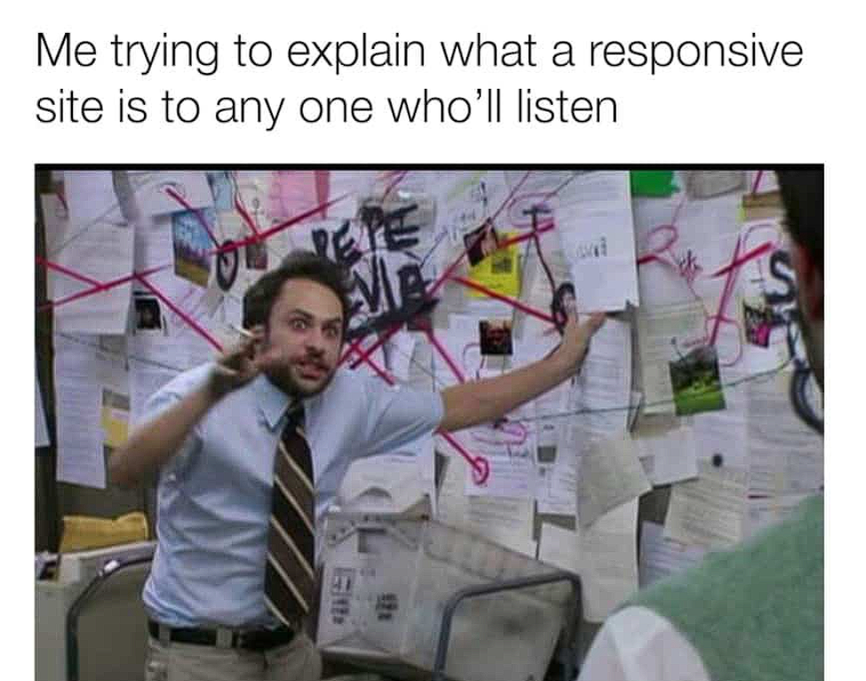

Hier schrijf ik gedurende mijn opleiding alles op wat ik leer en wat we besproken hebben in de lessen.
Elke sprint staat geordend in de NAV bar hiernaast. Als je erop klikt kom je terecht bij de pagina die je wil lezen :)
Vandaag heb ik een breakdown sketch gemaakt van hoe ik wil dat mijn visite kaartje eruit komt te zien.
Hoe weet je wanneer je welk element moet gebruiken?
Op Mozilla staan alle elementen die je kan gebruiken en wat ze doen. Daarnaast kan je kijken op github en eventueel Chat gebruiken..
Wat is het nut van een breakdown schets?
Het nut van een breakdown sketch is dat ik weet welke elementen bij welke dingen op de website worden gebruikt.
Waar moet je op letten als je een breakdown schets maakt?
Ik moet erop letten dat de elementen met de juiste kleur zijn gehighlight. Anders dan kan ik in de war raken met de vertakking van de code.
3-9-2026
Vandaag heb ik remote thuis gewerkt. Hier heb ik feedback ontvangen van mijn docent over de breakdown schets die ik gisteren heb aangeleverd.
Vandaag heb ik gewerkt aan mijn visite kaartje. Om dit een beetje beter te begrijpen heb ik aan chat gevraagd hoe ik dit het beste kan doen.
Daarnaast heb ik op Mozilla gekeken wat welk element betekent en heb ik geexperimenteerd met het verplaatsen van mijn afbeelding.
Ik ben er achter gekomen dat ik dit kan doen door "left" toe te voegen onder "top" bij img in css.
Week 2
7-9-2026
Vandaag hebben we een start gemaakt aan een nieuwe opdracht. Hierbij zitten we in teams en maken we onze eigen Squad Website!
Ik zit in een team met Rabia en Wesley, we hebben vandaag de Amstel Campus verkent en schetsen gemaakt en besproken voor hoe we dit eruit willen laten zien.
Daarnaast hebben we op Figma inspiratie bij elkaar gehaald van verschillende websites. En een abstracte indeling gemaakt van onze vaardigheden en dingen die we belangrijk vinden in het team.
Verder hebben we een abstracte planning gemaakt en gaan we morgen na de CSS chalange en woensdag aan de slag met de code bouwen
3 dingen die ik geleerd heb vandaag
Waar sommige plekjes zitten op de Amstel campus
Hoe we effectief kunnen werken in een team
Hoe we van schets tot ontwerp kunnen komen
2 dingen die ik interessant vind1 ding waar ik nog vragen over heb
11-9-2026
Vandaag hebben we feedback gegeven en ontvangen Dit hebben we gedaan met zowel klasgenoten als 2 docenten.
14-9-2026
Vandaag hebben we geleerd hoe visuele hierarchie werkt en hoe we dit moeten toepassen op onze opdrachten.
The Inverted Triangle of writing
Belangrijke informatie
Belangrijke details
achtergrond
Dit pas je toe door te kijken naar wat de gebruiker de belangrijkste info vind, wat de belangrijkste details zijn en wat de achtergrond informatie is op de webpagina
Een sterke visuele hierarchie is belangrijk voor een goede website Het is belangrijk in webdesign omdat het mensen verteld waar ze naar moeten kijken en wat belangrijk is.
Hierbij kijken mensen vaak naar de grootte, kleur/contrast, animatie, de witruimte en positie op het scherm. De gang van waar mensen het eerst naar kijken gaat vaak vanzelf en kleuren zijn hierin belangrijk.
Joshua Porter is een onderzoeker die heeft
Bron:Principles of User Interface Design, door Joshua Porter
15-9-2026
Vandaag heb ik en mijn team vanaf thuis gewerkt. Thuis heb ik ervoor gezorgd dat
16-9-2026
Vandaag heb ik beter leren coden. Onder andere heb ik beter leren werken met javascript en CSS. Ik ben nog steeds vaak aan het experimenteren maar ik begrijp steeds meer wat ik doe.
Javascript
CSS Margins
Sprint 2 - The Client
korte beschrijving:...........
23-9-2026
Wat ik heb geleerd over schetsen
Dat het gebruiken van verschillende kleurtjes belangrijk is
Dat je duidelijk opschrijft over welk element het gaat
Dat de lijnen niet door elkaar heen lopen en allemaal een eigen plek hebben.
Dat meerdere schetsen voor 1 ontwerp handig is, omdat je dan meerdere opties hebt voor je uiteindelijke ontwerp.
De bronnen van de workshop vond ik erg fijn, omdat ik nu een beter beeld heb van hoe ik een goede breakdown schets kan maken.
25-9-2026
Wat heb je geleerd van de code van iemand anders? Benoem 3 geleerde lessen die je meeneemt in je eigen project.
Wat vond je van de feedback die je hebt ontvangen? Met welke feedback ga je maandag verder?
Je hebt zelf ook feedback gegeven. Had de ander hier wat aan? Wat zou je de volgende keer anders doen?
28-9-2026
Wat is de default Layout Mode van elk element?
De default Layout mode van elk element is de Flow Layout.
Dit houd in dat de elementen zich automatisch indelen op basis van hun Inline en Block eigenschappen, zonder dat er specifieke CSS-instructies nodig zijn
Wat is het verschil tussen flexbox Layout en Grid layout? Wanneer zou je welke gebruiken?
Flexbox is ideaal voor het uitlijnen van elementen in 1 dimensionale layouts (horizontaal of verticaal)
Een Grid layout is geschikt voor het maken van complexere lay-outs.
Flexbox kan het beste gebruikt worden voor eenvoudige lay-outs en Grid wordt gebruikt voor meer gestructureerde en geavanceerde ontwerpen.
Welke layout modes beheers je al? En welke moet je nog leren? (en wanneer ga je dat doen?)
Ik beheers op dit moment het beste een Grid layout. Ik moet nog leren hoe flex werkt en dat ga ik in de aankomende weken leren gebruiken.
Schrijf op welke layout modes je wil gebruiken per onderdeel van het ontwerp van de opdracht gever.
De layout modes die ik het liefst wil gaan gebruiken voor de opdracht is vooral de Grid layout.
Daarnaast zou ik een flexbox willen gebruiken voor de bovenste knoppen.
Dit ga ik doen aangezien ik het als feedback had gekregen op mijn code, tijdens de Code&Design Review afgelopen vrijdag.
30-9-2026
3 eigenschappen leesbare tekst
Leesbare tekst moet minimaal 16 pixels groot zijn Daarnaast is de regelafstand is 1.4 (140%) en is de optimale lengte 10-12 woorden.
Tel hoeveel woorden in deze slide gemiddeld op een regel staan, heeft Josef Müller Brockmann gelijk?
ER staan ongeveer 20 woorden op deze slide. Ik vind dat hij niet gelijk heeft omdat woorden ook versiering kunnen hebben om meer naar voren te komen
Daarom hebben we headers en de kleinere letters daar onder. Er is makkelijker onderscheid te maken tussen titels en beschrijving.
Schrijf op welke stappen je moet nemen om Mobile First te werken, en hoe je dit aan je code kunt zien. Laat ook een stuk code zien..
Om mobile first te werken kan je op Chrome een website inspecteren en het formaat vervolgens op iPhone SE zetten.
Dit is het kleinste formaat telefoon die mensen tegenwoordig gebruiken.
Hieronder heb ik een stukje code staan dat alleen gezien kan worden met de editor.
In All-Human-Accesible website heb ik een paar Nav knoppen gemaakt die van mobile first uitbreiden tot Responsive ontwerp.
De code daarvan staat hieronder.
2-10-2026
Welke Layout modes gebruik je al regelmatig? En met welke wil je nog meer oefenen?
Ik gebruik de Grid layout het vaakst, ik zou nog willen oefenen met flexbox zodat ik meer opties heb om er mee te werken en het toe te kunnen passen.
Welke feedback heb je gekregen op Mobile first werken?
Zelf heb ik de feedback review nog niet gedaan, doordat ik en mijn groepje een beetje achter liepen met de CSS layouts. Daar zijn we deze les mee bezig geweest om up to date te blijven.
Mijn leerling mentor heeft wel uitgelegd waar het voor is en hoe ik het kan gebruiken voor toekomstig werk.
19-10-2026
21-10-2026
Quiz gedaan in plaats van een checkout!
26-10-2026
Wat betekent WCAG?
WCAG betekent Web Content Accessibility Guidelines, het zijn de richtlijnen die helpen met toegankelijkheid voor een website.
Geef een voorbeeld van een kleurencombinatie met een goed contrast
Zwart en wit is een goed kleuren contrast omdat witte tekst op een zwarte achtergrond goed te zien is. Hetzelfde geldt andersom
Aan welke WCAG level denk jij je te gaan houden? A, AA of AAA
Het doel is om me aan AAA te houden.
28-10-2026
Schrijf 1 ding dat je anders aan gaat pakken tijdens de komende sprint review
In de komende sprint review wil ik meer aantekeningen maken en de info verzamelen in Issues.
Beschrijf 2 verbeteringen die je in ReadMe hebt gemaakt sinds de vorige keer
In de ReadMe staan nu alle kenmerken, bronnen en een beschrijving over het project zelf
Er staan nu ook alle links naar de GitHub repositories van de mensen in mijn team.
Beschrijf 3 dingen waar je feedback op wil van de opdrachtgever tijdens de Sprint Review.
De vormgeving van de website; wat kan er nog verbeterd of weggelaten worden?
Op welke manier mijn code verbeterd kan worden?
Hoe is mijn demonstratie?
Assessment afgenomen door: Berat en Koop
Gefeliciteerd, je hebt het assessment gehaald!
Goede punten
Je bent lekker bezig, ga zo door!
Je hebt de GitHub workflow met commits, issues, feedback vragen en krijgen al heel goed in de smiezen. Top!
Probeer nu ook de commits aan de issues te hangen.
Criterion Feedback
We zijn benieuwd hoe je methodisch handelt voor de opdracht van de opdrachtgever, hoe de principes Responsive en Toegankelijkheid zijn toegepast en hoe je hebt getest.
Vragen
1.1.1
Laat eens zien hoe je de development lifecycle hebt toegepast binnen je project.
Je maakt een website aan de hand van een breakdown schets, je begint daar eerst mee. Dan vraag je feedback en daar reageer je op en deze feedback schrijf je op en maak je hier een checkbox van deze pas je dan toe, door deze aan te vinken. Je werkt ook in PB (project boards).
>Laat eens een issue zien waarin je meerdere fases doorloopt, of itereert.
> Je laat zien dat je issues hebt en aan de hand van feedback deze issues verder uitwerkt.
Heb je meer van dit soort voorbeelden? Commits erbij misschien? HTML tests? Schetsen? Code en wijzigingen daarna door feedback?
1.1.2
Laat eens zien welke aangeboden principes op het gebied van frontend design je hebt toegepast voor de opdrachtgever.
Heb je een ontwerp gemaakt voor Responsive Design?
Heb je ook een voorbeeld hoe je Visuele hiërarchie hebt toegepast?
Over aangeboden standaarden, laat eens zien hoe je die toepast voor de opdrachtgever?
Laat eens wat HTML zien waar je blij mee bent?
> Je hebt nu meer kennis en bent blij dat je zelf meer hebt kunnen doen, ook op basis van feedback, dat je kan zien wat je nu kan met de kennis die je hebt. Het gaat om S3. Je vind de dashboard het coolst waar je heel blij mee bent.
En CSS, gebruik je (geneste) media queries om bijvoorbeeld je layout aan te passen?
> Je maakt gebruik van variable, je maakt ook gebruik van mobile first. Je hebt ook een beginnetje gemaakt aan nesten met media queries.
1.1.3
Hoe zorg je ervoor dat alle gebruikers je website goed te 'zien' krijgen en kunnen bedienen?
Heb je tests gedaan op de opdracht? En heb je die resultaten ook verwerkt? Kan je dat laten zien?
Heb je een WCAG audit gedaan en de resultaten verwerkt?
Heb je een color contrast test gedaan? Wat kwam daaruit?
> Je hebt in een issue staan dat je lighthouse hebt toegepast op de website van FDND, je hebt dit ook op je eigen website gedaan maar het niet gedocumenteerd voor je eigen website.
> Je hebt een color contrast test gedaan maar hebt dit nog niet toegepast, je hebt hier wel een checkboxes van gemaakt omdat je weet dat je dit moet doen, zodat je dit kan toevoegen.
Feedback
Hiermee toon je aan dat 1.1.1, 1.1.2 op niveau zijn.
1.1.3 is nog niet op niveau, je hebt de waag test niet op je eigen project gedaan
Criterion Feedback
We zijn benieuwd hoe je in een team hebt samengewerkt, wat voor afspraken jullie hebben gemaakt en hoe je feedback hebt gegeven en gekregen en wat je met de feedback doet.
Vragen
1.2.1
Vertel eens wat over jullie teamopdracht van Sprint 1.
> Het ging wel goed, ik was wel tevreden met onze samenwerking. Jullie hebben besproken hoe jullie de communicatie willen en welke afspraken jullie willen in jullie teamcanvas.
Hoe heb je je daarin laten begeleiden?
Heb je bijvoorbeeld een kampvuursessie gedaan, of een teamcanvas ingevuld? Wat kwam daaruit?
> We hebben een kampvuursessie gehouden, dit heb ik een issue gezet, hieruit kwam: Jullie hadden in het begin vage communicatie en hebben jullie dit bijgestuurd. Vanaf de volgende keer willen jullie vanaf het begin betere communicatie.
1.2.2
Over verantwoording voor je eigen resultaten dragen: heb je wel eens feedback gekregen binnen de squad?
Heb je aan code & design reviews meegedaan? Wat doe je dan met de feedback?
> Je hebt feedback gekregen van je studiegenoten, je hebt deze feedback nog niet omgezet in issues maar wel in commits.
Geef je ook feedback aan anderen? Laat eens wat voorbeelden zien.
1.2.3
Wat is volgens jou respectvol handelen naar anderen? Heb je daar een voorbeeld van?
> Dat je goed met teamgenoten omgaat en respectvol bent, je neemt hun serieus. Je vind dat de teamcanvas hier een mooi voorbeeld voor is.
Schrijf je nette issues naar anderen?
Heb je een conflict gehad in de samenwerking?
Feedback
Hiermee toon je aan dat 1.2.1, 1.2.2 en 1.2.3 op niveau zijn.
Criterion Feedback
We zijn benieuwd hoe je hebt gecommuniceerd met de opdrachtgever, hoe je je werk hebt gepresenteerd en gedocumenteerd, en wat je met opmerkingen van een opdrachtgever doet.
Vragen
1.3.1
Over luisteren naar wat een ander zegt en dit serieus nemen: hoe verliep jullie briefing in Sprint 2?
Heb je daarop een debriefing gestuurd naar de opdrachtgever?
Over de Sprint Reviews, wat heb je met de feedback gedaan? Wat vond de opdrachtgever van hoe je feedback hebt verwerkt?
> In sprint reviews krijg je feedback, ook hier werk je in checkboxes maar deze heb je nog niet helemaal uitgewerkt. Je weet dat je er nu sub-issues van kunt maken en zou daar mee willen werken.
1.3.2
Heb je voorbeelden van hoe je jouw ideeën of ontwerpkeuzes overbrengt?
> Je hebt verteld over de kleurcontrasten en dat sommige tekst nog beter moet en groter, zodat het toegankelijker is.
Heb je je werk gepresenteerd bij de opdrachtgever? Hoe heb je dat gedaan?
Laat je Readme van Sprint 2 of 3 eens zien?
> Je hebt readme's geschreven, deze zijn alleen nog niet helemaal visueel, een soort overdrachtsdocumentje hebben jullie gemaakt en daar kunnen zij nu door klikken.
1.3.3
Over documenteren volgens aangeboden richtlijnen, heb je daar voorbeelden van?
Hoe kun je laten zien hoe je je voortgang bijhoudt?
Hoe documenteer je bijvoorbeeld je verschillende stappen in code? Gebruik je commits en schrijf je commit messages?
Hoe kun je je voortgang laten zien via issues?
> We zien dat je in je code comments neerzet om je code te onderbouwen. Ook zien we dat je in commits uitlegt wat je gedaan hebt, dit is terug te halen naar de feedback die je gekregen hebt. Je bent bezig met issues en commitmessages en bent klaar voor de volgende stap.
Feedback
Hiermee toon je aan dat 1.3.1, 1.3.2 en 1.3.3 op niveau zijn.
Voor 1.3.3 krijg je een extra punt, je documentatie staat er goed bij en het is goed navolgbaar wat je doet.
Criterion Feedback
We zijn benieuwd hoe je een ontwerpprobleem aanpakt en tot een oplossing komt in code en design.
Vragen
1.4.1
Heb je een voorbeeld van hoe je een probleemvraag geanalyseerd hebt?
Als je een nieuw issue hebt gekregen, of zoals die Layout in CSS deeltaak een nieuw ontwerp dat je nog niet kunt, wat doe je dan als eerste? Heb je daar een goed voorbeeld van?
> Je hebt de eerste 4 gemaakt. Je bent nog bezig met de rest, je hebt ook van de sites breakdown schetsen gemaakt, je hebt het alleen nog niet in github gezet.
Heb je een voorbeeld van een issue uit Sprint 3?
1.4.2
Welke schetsen heb je gemaakt om gedachten te verkennen? Bijvoorbeeld breakdownschetsen, laat eens zien.
Heb je nog een ander voorbeeld hoe je met schetsen een probleem hebt opgelost?
1.4.3
Welke eenvoudige code heb je zelf bedacht en gemaakt?
Laat eens zien welke Layout Modes je hebt gebruikt in CSS ?
> Je maakt gebruik van onder andere Grid, Sticky en Flex.
Hoe heb je de layout problemen voor de opdrachtgever opgelost?
Feedback
Hiermee toon je aan dat 1.4.1, 1.4.2 en 1.4.3 op niveau zijn.
Criterion Feedback
We zijn benieuwd hoe je leert, of je de lessen en stof volgt, of je naar de We Love Webs bent geweest en of je al zelf op zoek gaat naar informatie.
Vragen
1.5.1
Bij FDND willen we dat je op termijn zelfstandig internationale ontwikkelingen in het vakgebied gaat volgen. Nu bieden wij daar de We Love Web sessies met gastsprekers nog voor aan. Vertel eens wat je daarvan geleerd hebt. Hou je dat ergens bij?
> Je vind de WLW's leuk! Je vind interessant om te zien hoe ver mensen zijn gekomen in het werkveld en wat ze doen, het is motivatie doen. Je hebt meegenomen van Tom en Tom, dat je de informatie die ze delen fijn vind om mee te krijgen.
1.5.2
Over aangeboden en zelf gevonden materie gebruiken: Kan je voorbeelden van CSS Challenges die je hebt gedaan laten zien?
> Je gaat ook naar de CSSC, je doet daar veel kennis op. Vooral grid. Altijd de eerste keer eng, de grid is fijn geweest om te doen, ik heb daar ook een zetje gekregen met hoe grid werkt. Het is nu ook 1 van mijn meest gebruikte layouts.
Kan je iets anders laten zien dat je hebt geleerd en waar je trost op bent? Hoe pak je dat aan?
1.5.3
Over inzicht in je eigen capaciteiten en beperkingen: Hou je je leerproces bij in je Learning Journal? Kan je laten zien hoe je je Learning journal gebruikt om te leren?
Waar wil je je op richten de komende tijd?
> Je zou graag willen richten op JS tot de kerst en je houd alle dingen die je leert ook bij in journal.
Feedback
Hiermee toon je aan dat 1.5.1, 1.5.2 en 1.5.3 op niveau zijn.
9-11-2026
Checkout van vandaag
Drie dingen die ik vandaag heb gedaan
figma bestand gevuld met knoppen
webstite onderzocht transavia en interface inventory
sitemap
memes gestuurd in de teams chat van de sprint
Afspraken zijn gemaakt en debriefing is gestuurd naar de opdrachtgever. Dit hebben we als team opgestuurd.
De leukste meme van het teams kanaal is deze onderstaande afbeelding

11-11-2026
Checkout van vandaag
3 dingen die ik vandaag heb geleerd van CSS
CSS cascade is de volgorde waarop elementen worden aangeroepen. En CSS specificity zijn een paar regels die ervoor zorgen dat er niks mis gaat wanneer er conflicten ontstaan in de code.
3 links die mij geholpen hebben met het onderzoeken van CSS
Vandaag hebben we een pubquiz gedaan. In deze popquiz hebben we onze kennis getest.
Maandag 16-11-2026
Checkout van vandaag
Aantekeningen Typografie & CSS properties
Basisregels voor leesbare teksten
Font Stack
font family, sans serif, monospace
@font-face
Absolute length units, Font relative length units, Viewport relative units
We zijn halverwege de stylesheet met mijn groepje. We hebben afgesproken dat we hier volgende les mee verder gaan.
In onze stylesheet staan nu de main kleuren, lettertype en een voorbeeld van de dark en light mode. Daarnaast staat het logo ook in de stylesheet.
De styleguide werkt nu, voor het grootste gedeelte, via de index zoals behoren.
Woensdag 18-11-2026
Voor de opdracht van Formulierelementen stylen maak ik een email en een submit formulier.
Hier heb ik nog niet eerder mee gewerkt.
Vrijdag 20-11-2026
Maak je genoeg gebruik van de gezamelijke stylesheet?
Niet zoveel gebruik als ik zou willen, maar in toekomstig werk wil ik dit verbeteren.
Benoem 2 voorbeelden hoe je gebruik maakt van de cascade/costom properties.
--base-night-rider: #322f2f; /*Zwart*/
--base-bleached-silk: #f2f2f2; /*Wit*/
Heb je door de code/design review verbeterpunten gevonden voor de gezamelijke
stylesheet? Welke issues zijn er op de gezamelijke repo ingeschoten? (Op basis van jouw werk)
We hebben ons voornamelijk gefocust op het reviewen van onze individuele opdrachten van de look&feel identity.
Hierin zijn ook een paar issues gemaakt, die ook toepasbaar zijn op de styleguide repo, dus die transfer ik zo naar de juiste repo.
Checkout 23-11-2026
Bewaar de verschillende bronnen uit de workshop in je Learning Journal,
noteer per bron waar het over gaat en link naar de voorbeelden die je hebt of gaat maken.
Ik weet hoe ik met GitHub iteratief kan werken, gebruik issues en sub-issues, en ik kan uitleggen wat een fork, clone, commit, push, pull, merge en conflict inhouden.
3 punten, I got this.
Ik weet van HTML wat elementen, tags en attributen zijn, en hoe ik mijn HTML kan valideren, en van CSS wat selectors, properties, values, units en combinators zijn.
3 punten, I got this.
Ik weet hoe ik Figma kan gebruiken om te variëren, hoe ik interactieve prototypes kan maken, en ik kan inschatten op welk moment ik verder ga in code.
3 punten, I got this.
Ik weet alle Layout Modes in CSS en eigenschappen van elke te benoemen, kan van (onderdelen van) een ontwerp bepalen welke ik inzet, en ze toepassen en combineren.
2 punten, Ik begrijp dit maar kan het nog niet volledig toepassen.
Ik weet wat de WCAG richtlijnen zijn, hoe ik een WCAG audit met automatische en handmatige tests doe, en hoe ik testresultaten kan verwerken.
3 punten, I got this.
Ik weet hoe ik met alleen HTML een prototype van (een deel van) een ontwerp maak, en waarom een robuust fundament belangrijk is, voordat ik volgende lagen toevoeg.
3 punten, I got this.
Ik weet hoe ik Mobile First ontwerp en ontwikkel, hoe ik dat kan herkennen in mijn CSS, hoe CSS nesting hierbij kan helpen, en wat het voordeel is van deze manier.
3 punten, I got this.
Een voorbeeld hiervan is de mediaquerry op de All Human repo.
Ik weet verschillende regels voor leesbaarheid van tekst, hoe ik de typografie kan aanpassen met CSS, en welke properties en units ik wanneer in kan zetten.
3 punten, I got this.
Ik weet hoe kleurcontrast te maken heeft met visuele hiërarchie én met toegankelijkheid, en hoe ik dit kan testen en verbeteren.
3 punten, I got this. Dit wordt gebruikt om mensen met een beperking, in bijvoorbeeld slechtziendheid en screenreaders, te helpen met het begrijpen van wat er staat.
Ik weet hoe ik een duidelijke Readme en Wiki kan opleveren, hoe ik Markdown hierin toe kan passen, hoe ik mijn werk aan een opdrachtgever presenteer tijdens een Sprint Review en hoe ik inhoudelijke feedback kan krijgen.
2 punten, Ik begrijp dit maar ik kan het nog niet volledig toepassen.
Ik weet wat in CSS specificity, cascade en inheritance betekenen, en kan deze onderwerpen via een schets uitleggen aan iemand anders.
3 punten, I got this.
Ik weet verschillende Gestalt wetten te benoemen en kan ze inzetten om ontwerpen beter (of slechter) te maken.
3 punten, I got this. Voorbeelden van verschillende Gestalt wetten zijn: Law of Common Region, Law of Similairity en Law of Proximity.
Ik weet hoe ik in HTML formulieren en formulierelementen maak, hoe ik validatieregels in HTML attributen meegeef, hoe ik verschillende states kan stylen met CSS en wat het verschil is tussen een placeholder en een label.
2 punten, Ik begrijp wat het ongeveer doet, maar ik kan dit nog niet volledig toepassen op mijn ontwerpen.
Ik weet wat Custom Properties in CSS zijn, waarom ze zo heten, hoe je ze gebruikt en dynamisch inzet, en hoe ze samenwerken met specificity, cascade en inheritance.
2 punten. Ik begrijp Costom Properties, hoe het werkt, waarom het zo heet en hoe ik het inzet.
Ik weet de basis van programmeren, zoals variabelen, functies, loops en data types, en ik weet wat het verschil is tussen een imperatieve taal en een declaratieve taal.
2 punten. Ik begrijp de basis van progammeren, bijvoorbeeld wanneer het gaat over variabelen en functies. Voor de rest ben ik nog niet zo bekend met loops, data types, impermentieve taal en declaratieve taal.
Ik weet wat keyframe animaties in CSS zijn, hoe je ze kunt gebruiken, hoe ze verschillen van transitions, en wanneer je wat inzet
1 punt. Ik heb hiermee geexperimenteerd maar ik weet nog niet zo goed wat dit is en hoe ik het kan toepassen.
Ik weet het verschil tussen feedback en feedforward in een User Interface, hoe die samenwerken, en hoe duidelijke labels de User Interface beter kunnen maken.
0 punten. Ik ben hier nog niet aan toegekomen.
Ik weet wat een gebruikerstest is, hoe je deze voorbereidt, en hoe je met een user story, testplan, scenario en observeren tot bruikbare testresultaten komt.
0 punten. Ik heb van de naam gehoord maar ik ben er nog niet aan toegekomen.
Ik weet hoe ik in JavaScript via het Document Object Model met querySelector, addEventListener en classList micro-interacties toe kan voegen aan mijn website.
1 punt. Ik heb hiermee geexperimenteerd, maar ik weet nog niet zo goed hoe het werkt.
Ik weet wat UI events en event properties zijn, hoe ik verschillende UI events in JavaScript kan gebruiken, en wat een callback functie is.
1 punt. Ik heb hiermee geexperimenteerd, maar ik weet nog niet zo goed hoe het werkt.